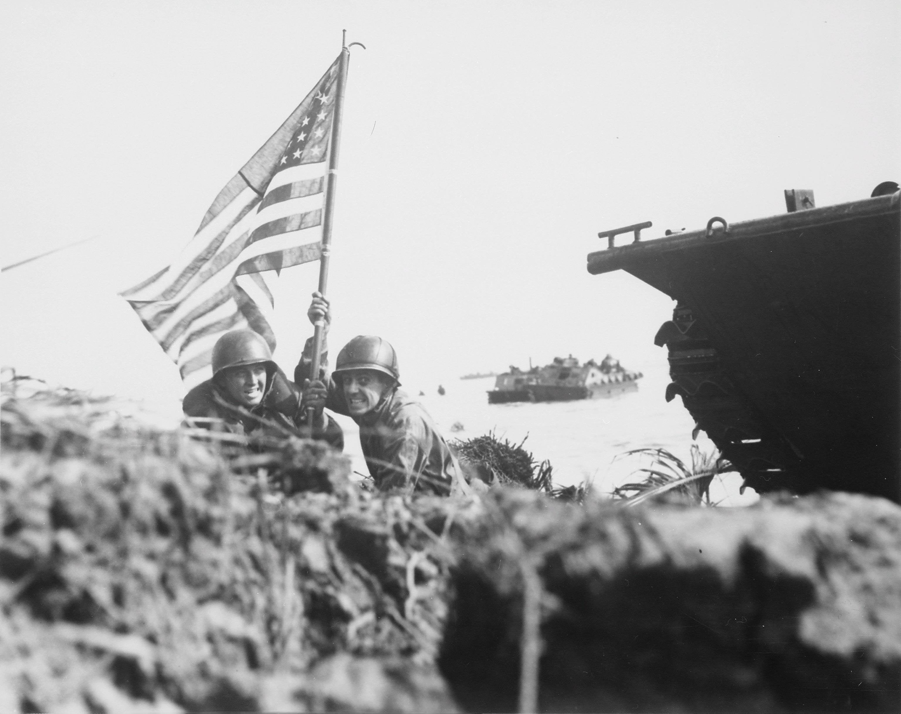
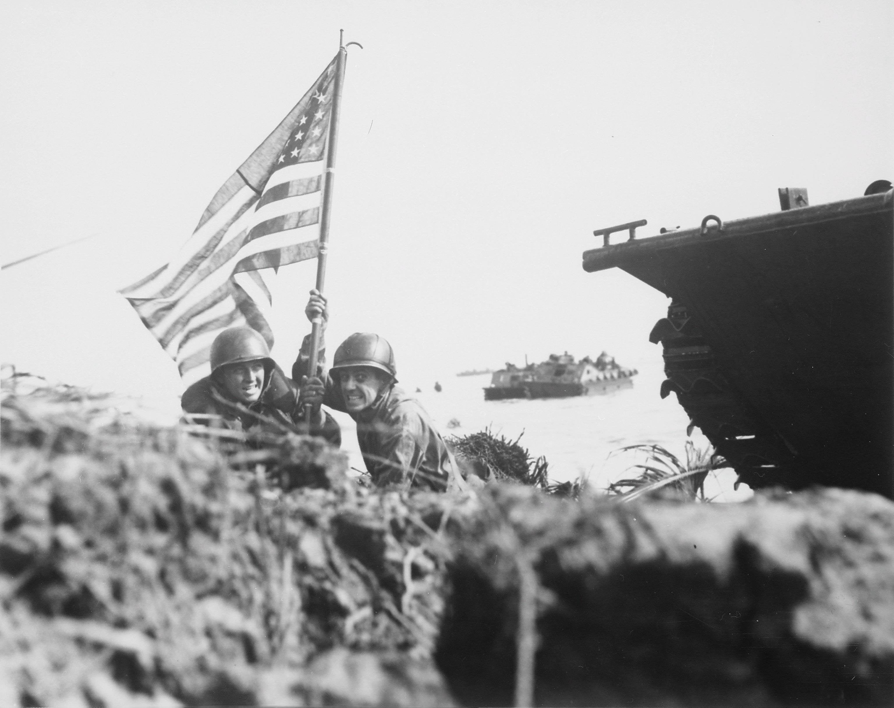

also known as the Second World War, was a global war that lasted from 1939 to 1945,
the most brutal conflict in human history. Over 50 million people perished, mostly civilian.
So when did the Second World War Breakout?
On 1 September 1939, Germany invaded Poland after having staged several false flag border incidents as a pretext to initiate the invasion.
German troops shown marching through Warsaw after their invasion of Poland
Adolf Hitler salutes parading troops of the German Wehrmacht in Warsaw, Poland.
Polish Infantry during the Invasion of Poland
On 17 September 1939, after signing a cease-fire with Japan, the Soviet Union invaded Eastern Poland under a pretext that the Polish state had ostensibly ceased to exist.
German and Soviet officers shaking hands following the invasion of Poland.


 
